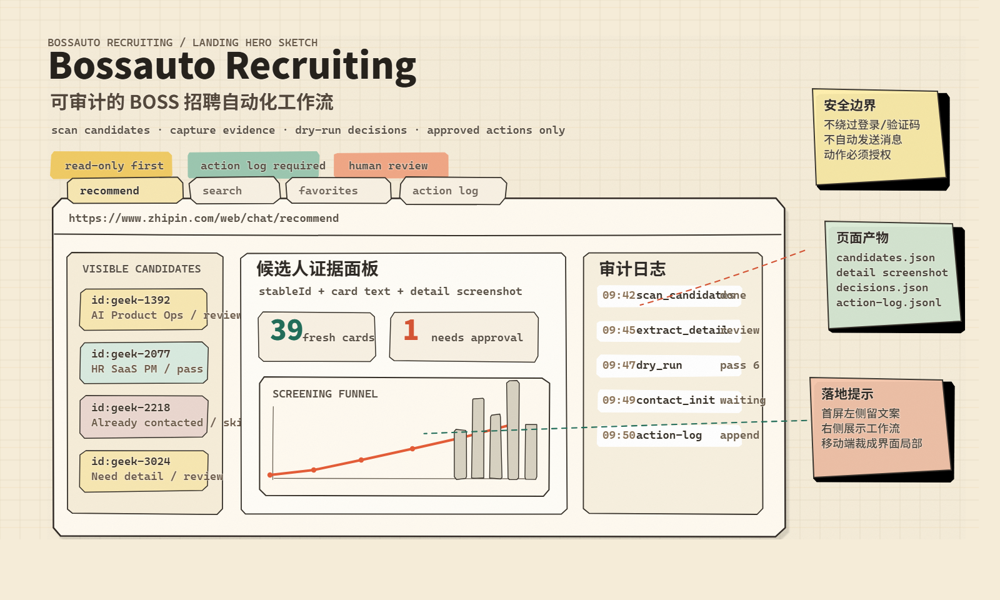

推荐方式
npm install -g @zyanwan/patchright-agent-installer
patchright-agent-installer install codex零依赖安装 — npm 包内已包含完整 skills，无需 gh/git/GitHub 认证，一条命令完成。
BOSS recruiting workflow sketch
从页面诊断、候选人扫描、证据提取到授权沟通，把招聘动作拆成可检查、可复核、可追踪的本地流程。

install
安装器只会安装仓库 skills/ 下包含 SKILL.md 的 Skill 目录，不会安装本地测试结果、浏览器登录状态、运行时证据、录屏素材或仓库工具。
npm install -g @zyanwan/patchright-agent-installer
patchright-agent-installer install codex零依赖安装 — npm 包内已包含完整 skills，无需 gh/git/GitHub 认证，一条命令完成。
npx -y git+https://github.com/ZyanWan/Patchright-Agent.git install codex适合需要指定分支/tag 或从本地仓库目录安装的高级用户。
~/.agents/skills
Claude: ~/.claude/skills
自定义: --target <path>
workflow
这个项目不是一组孤立点击脚本，而是一条围绕证据和审计设计的招聘流水线。默认路径保持只读，任何网站状态变更都需要当前授权和目标复核。
识别当前 BOSS 页面类型、URL、frame 和候选人卡片结构，保留用户当前业务上下文。
提取 stableId、姓名、公司、岗位、学历、全文卡片证据和疑似已沟通信号。
按招聘要求做本地 dry-run，信息不足或身份不稳时进入 review，而不是强行拒绝。
打开候选人详情，保存 DOM 文本、截图、canvas 诊断和身份匹配状态。
收藏、发起沟通和批量沟通默认 dry-run，只有明确授权后才按 stableId 重新定位并执行。
输出 JSON、截图、decision records 和 append-only action log，让招聘负责人可以复核。
guardrails
runtime artifacts
页面结果不是口头承诺，而是可解析、可追踪的工作目录。后续做报告、Excel 或人工复核时，可以直接复用这些文件。
当前页面可见卡片、stableId、frame 来源、疑似已沟通标记和完整卡片文本。
对 DOM 文本不足、canvas 简历或身份不确定的候选人，保留可视化证据。
区分 pass、reject、review、skip，不把信息缺失误当成硬拒绝。
记录每次授权动作的候选人、原因、状态、时间戳和证据路径。
demo footage
视频素材保留在项目目录中，页面只做静态引用。打开 HTML 即可查看，不需要启动服务。